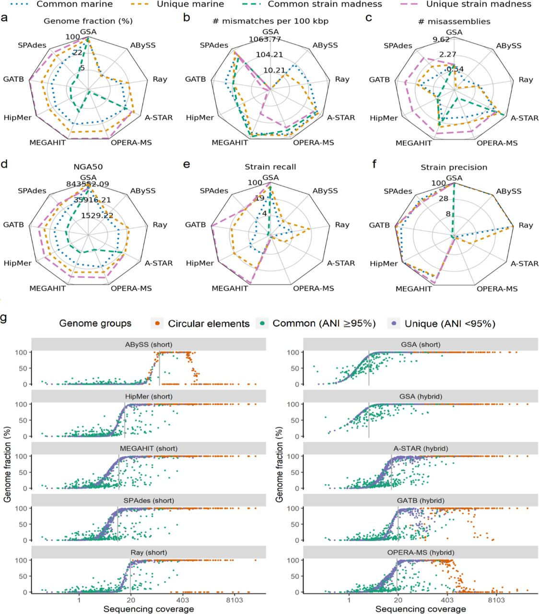
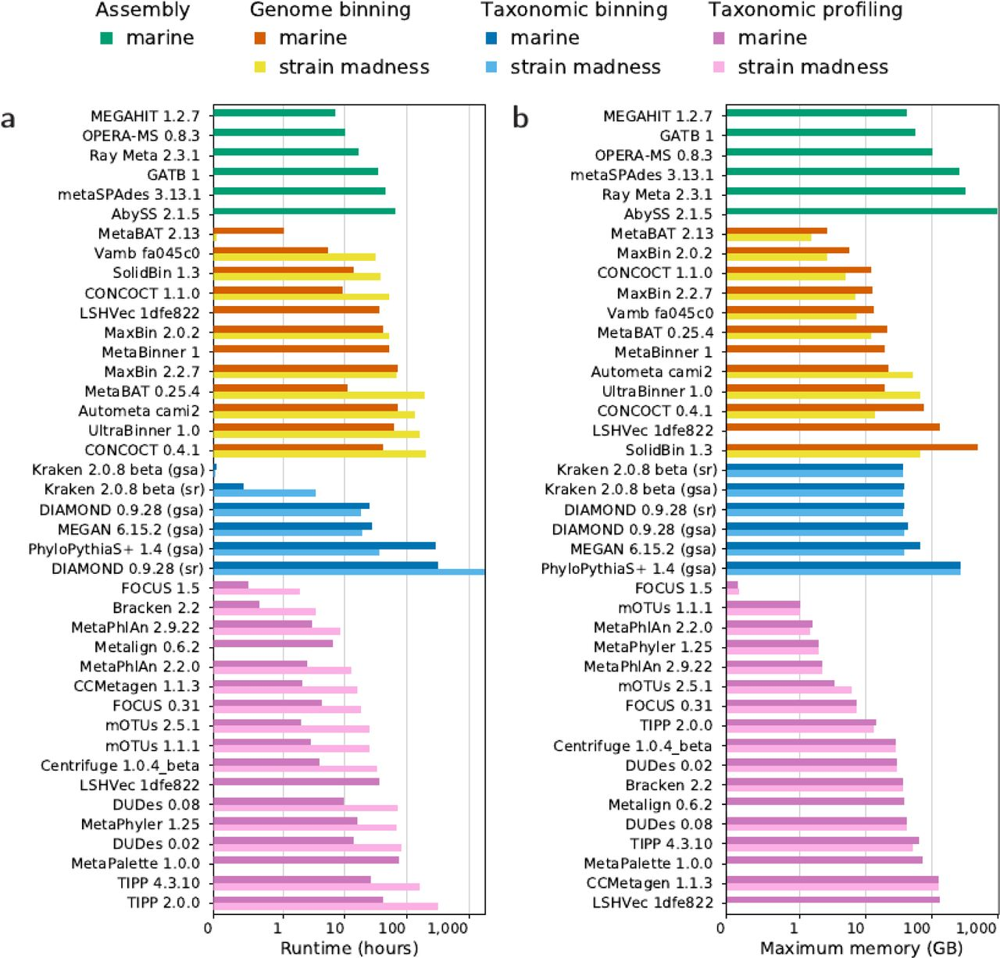

Reproducing Critical Assessment of Metagenome Interpretation assembly challenge on marine dataset with Galaxy
 PlushZ
PlushZ

 Bérénice Batut
Bérénice Batut
OverviewQuestions:Objectives:
How to reproduce CAMI challenge?
How to add/update tool in Galaxy?
How to benchmark results of CAMI challenge?
Requirements:
Be familiar with CAMI challenge
Be able to select one challenge and benchmarking datasets
Be able to upload benchmarking datasets into Galaxy
Be familiar with Galaxy computational resources
Be familiar with existing tools in Galaxy
Be familiar with databases / reference genomes that are available in Galaxy
Be able to add/update the tool in Galaxy
Be able to choose assembling tool based on dataset metadata
Perform assembly with Flye, Megahit, Abyss, MetaSPAdes tools
Produce a benchmarking analysis of these assemblies with Quast, Bowtie2, Map with Minimap2, Samtools, and MultiQC tools
Create plots with Python to compare results
Time estimation: 40 hours 00 minutesSupporting Materials:Last modification: Mar 27, 2022
 Questions:
Questions:
Agenda
In this tutorial, we will cover:
Introduction
Global context
Metagenomics analysis involves complex computational methods like assembly, genome binning, taxonomic binning, taxonomic profiling and other. It is only when these initial data processing methods make sense that downstream analyses and information extraction are meaningful. Even though vast progress has been made over the last few years, none of these approaches can fully recover the complex information encoded in metagenomes. These approaches all rely on simplifying assumptions that can have serious limitations.
It is usually difficult for microbiome data analysts to know which tools to use for each step. They must rely on evaluations made by the developers of new or improved methods. However, these evaluations are rarely comparable: there is no general standard for the evaluation of computational methods in metagenomics. As a result, users may not be properly informed and compute predictions may be misinterpreted.
The CAMI Challenge
Essentially, the critical assessment concept involves evaluating a theory, situation, statement, or something else with the goal of supporting its dominant paradigms or disproving them as well as suggesting a better alternative plan. Any view or conclusion needs to be backed up by credible evidence in order to be considered critical. In metagenomic research, critical assessment of the data interpretation is especially important, because merely accepting the data as truth would not suffice.
“Critical Assessment of Metagenome Interpretation—a benchmark of metagenomics software \textbar Nature Methods” (CAMI) was established in 2012. The objective of CAMI is to evaluate metagenomics methods independently, comprehensively, and without bias. The initiative provides users with comprehensive information about the performance of methods in all relevant scenarios. Therefore, it assists users in the selection and application of methods as well as their proper interpretation.
During the 1st CAMI challenge, extensive metagenome benchmark data sets were generated from newly sequenced genomes of around 700 microbial isolates and approximately 600 circular elements that were distinct from strains, species, genera or orders represented by public genomes. Four challenges were suggested (assembly, binning, taxonomic profiling, taxonomic binning). Overall, 16 teams worldwide submitted 215 submissions to the CAMI1 challenge, consisting of 25 programs and 36 biobox implementations, with permission to publish.
“Critical Assessment of Metagenome Interpretation - the second round of challenges \textbar bioRxiv” (CAMI2) started in 2019. It includes 4 different challenges:
- An assembly challenge
- A genome binning challenge
- A taxonomic binning challenge
- A taxonomic profiling challenge
- Clinical pathogen prediction challenge
Each challenge uses a similar set of benchmark datasets reproducing different environments and different sequencing technologies long and short reads). The six benchmark datasets—reflecting a range of complexities—were created from 1,680 microbial genomes and 599 circular elements of viruses and plasmid:
- 2 ‘toy’ datasets created from public data and provided before a challenge,
- 3 ‘challenge’ datasets derived exclusively from genomic data that were not publicly available at the time
- Marine
- Simulated short read and long read shotgun metagenome data from samples at different seafloor locations of a marine environment
- Plant-associated
- Simulated short read and long read shotgun metagenome data from samples taken from a plant rhizosphere environment
- strain madness
- Simulated long read and short read shotgun metagenome data, including a large amount of strain-level variation
- Marine
- a pathogen detection challenge dataset was offered, based on a clinical metagenome sample of blood from a critically ill patient with hemorrhagic fever of unknown cause.
During the challenges, Datasets for the challenge were available for download only to participants via the CAMI portal. After the challenges, all CAMI benchmark datasets were made available with digital object identifiers (DOIs) (Table 2) and the genomic data are now in public sequence repositories such as the National Center for Biotechnology Information (NCBI) to be used for further benchmarking in the field.
Different tools were run with different parameters on the various datasets. Participants ran their preferred tools with their preferred set of parameters and submitted their results along with either a Docker container containing the complete workflow, a bioconda script or a software repository with detailed installation instructions, specifying all parameter settings and reference databases used. A total of 5,002 submissions were received from 30 external teams and CAMI developers for the four challenge datasets. Following that, the CAMI developers evaluated the results using standardised metrics and then made sense of the different results described in Meyer et al, 2020
Galaxy could be considered as a good platform for such a challenge as CAMI.
In addition to providing the computational resources, Galaxy provides full reproducibility, which makes it a great solution for CAMI and similar types of challenges. Everything required to complete such challenges is collected in one location:
- Datasets which can be uploaded to data libraries and shared with public
- Databases and tools of different versions can be available to use
- History of tool runs with documented parameters of tool runs, inputs, outputs, command line, job parameters (CPU, memory usage, runtime, etc.)
- Galaxy workflows can be extracted and shared for the reproducibility
- Etc.
In Galaxy, users can choose to share their history with certain users or to publish it so that everyone can access the history.
Motivation
In this tutorial we show how Galaxy could be used as a platform to support the next CAMI challenges or for other similar critical assessment challenges, but also what were the issues we got and possible solutions (on Galaxy side but for organisers of such challenges).
Select the challenge to reproduce
In this section we choose the challenge to reproduce. As the entire challenge is not a one-day task and takes months to complete, we should focus on one challenge out of four - assembly, genome binning, taxonomic binning, or taxonomic profiling. The choice we make depends on our interests and objectives.
Description of CAMI challenges
Assembly challenge
Assembly is one of the important components of metagenomic analysis. The challenge is called to assess the quality and performance of tools for assembling strain-resolved genomes.
Three “challenge” datasets were offered:
- marine,
- strain madness, and
- plant associated data.
Two types of assemblies were assessed: single-sample assembly, i.e. assembly of reads from only one sample at a time, and co-assembly, i.e. assembly of all reads from several samples together. For the sake of comparison, gold standard assemblies, i.e. the correct result which can be used to compare with and benchmark other methods’ results, were created with all regions covered by at least one read and were provided only after the challenges.
Participants provided 155 submissions and 20 assembler versions of 10 assembling tools to be evaluated during this challenge. The different tools performed differently while measuring various metrics. By CAMI2 developers there are provided plots of benchmarking analyses of different tools depending on different statistics.
{kind=link}

Overall, GATB[3] ranked best on the strain madness data across most metrics (mismatches, misassemblies, strain recall, and strain precision), while HipMer[4] [5] [6] on the plant-associated data. Compared to the first CAMI challenge A-STAR [7] considerably improved in genome fraction for the strain madness data. The other leader SPAdes [8] [9] was not introduced in the CAMI1 challenge [1] and performed well in CAMI2. For the type of assembly, the different tools performed differently. Single-sample assembly was done well by all assemblers. HipMer [4] [5] [6] performed better on single samples as well as for pooled samples.
Genome binning challenge
Genome binning clusters or classifies sequences or contigs into bins representing genomes.
It takes as input the output of assembly. Two types of short read assemblies were given as inputs for CAMI2 [2]: MEGAHIT [10] assembly and Gold Standard Assembly. Both types for strain madness, marine, and plant-associated datasets, so 6 possible datasets in total.
Participants submitted 95 results and 10 binning tools (overall, 18 binner versions). The results were evaluated based on .
- the average purity of bins,
- The average purity is the fraction of correctly assigned base pairs for all assignments to a given bin averaged over all predicted genome bins, where unmapped genomes are not considered.
- This value reflects how trustworthy the bin assignments are on average.
- completeness of genomes recovered,
- Adjusted Rand Index which quantifies binning performance for the overall dataset.
- According to the paper [11], genome binners generate groups or clusters of reads and contigs for a given dataset. Instead of calculating performance metrics established with a bin-to-genome mapping, the quality of a clustering can be evaluated by measuring the similarity between the obtained and correct cluster partitions of the dataset, corresponding here to the predicted genome bins and the gold standard contig or read genome assignments, respectively. Two contigs or reads of the same genome that are placed in the same predicted genome bin are considered true positives TP. Two contigs or reads of different genomes that are placed in different bins are considered true negatives TN. The Rand index ranges from 0 to 1 and is the number of true pairs, TP + TN, divided by the total number of pairs. However, for a random clustering of the dataset, the Rand index would be larger than 0. The adjusted Rand index (ARI) corrects for this by subtracting the expected value for the Rand index and normalising the resulting value, such that the values still range from 0 to 1.
The performance of different genome binning tools differed depending on metrics, datasets, and assembly type. Overall, the best trade-off performances were given by MetaBinner[12] on marine and strain madness assemblies, and CONCOCT [13] on plant-associated assemblies.
Taxonomic binning challenge
Taxonomic binners group sequences into bins labelled with a taxonomic identifier.. For the challenge, input datasets were marine, strain madness, and plant-associated of 2 types: reads or gold standard assemblies.
547 results for 7 tools were submitted and evaluated using 3 metrics :
- average purity,
- completeness of bins, and
- the accuracy per sample (the fraction of contigs, or base pairs, that have been assigned by a method to the correct taxa for a taxonomic rank).
Performances for all datasets decreased from genus to species for all metrics, most notably for completeness by 22.2%.
Across all datasets and all metrics the best performance was shown by MEGAN [14], closely followed by Kraken [15] v.2.0.8-beta. However, in terms of certain metrics different binners performed better.
There was a post-processing data approach used to improve the results. This approach means filtering of the 1% smallest predicted bins per taxonomic level. Filtering increased purity whereas reduced completeness. Accuracy was not affected. The winner MEGAN was not changed though.
Taxonomic profiling challenge
Using metagenome samples, taxonomic profilers identify and quantify microbial community taxa. There were predicted taxonomic identities and relative abundances of microbial community members for the 64 samples of the mouse gut dataset. There were 4195 results for 13 tools evaluated. The majority of results were from short-read samples and a few from long-read.
The performance of the tools were evaluated using:
- purity of identified taxa,
- taxon abundance,
- For quantifying relative abundance estimates, the L1 norm and weighted UniFrac error are determined. The L1 norm assesses relative abundance estimates of taxa at a taxonomic rank, on the basis of the sum of the absolute differences between the true and predicted abundances across all taxa. The weighted UniFrac error uses a taxonomic tree storing the predicted abundances at the appropriate nodes for eight major taxonomic ranks. The UniFrac error is the total amount of predicted abundances that must be moved along the edges of the tree to cause them to overlap with the true relative abundances.
- alpha diversity of profiling results.
There was a notable performance drop observed from genus to species level rank for all datasets: marina, strain madness, and plant-associated.
mOTUs [16] v.2.5.1 performed the best on the marine data at both genus and species. For strain madness data, leaders for genus rank were MetaPhlAn [17] [18] v.2.9.2, MetaPhyler [19] v.1.2571, and mOTUs of the CAMI1. For plant-associated data Bracken v2.6 performed best for completeness across ranks.
Abundances across ranks and submissions were on average predicted better for strain madness than marine data. On the marine data, mOTUs v.2.5.1 had the lowest L1 error while mOTUs v.2.5.1 and MetaPhlAn v.2.9.22 both had the lowest UniFrac error.
On the strain madness data, mOTUs cami1 performed best in L1 norm error whilst MetaPhlAn v.2.9.22 had the lowest UniFrac error.
On the plant-associated data, Bracken v.2.6 had the lowest L1 norm error across ranks and had the lowest UniFrac as “sourmash gather 3.3.2 k31” did.
Compare tools used in CAMI2 with what is already exist in Galaxy
We compared tools submitted for every challenge to understand the start point of CAMI2 reproduction in the Galaxy. We collected metadata for each tool:
- source code,
- Publication that describes the tool
- Tool version
- Availability in Galaxy
- owner/ developer in Galaxy
- Galaxy wrapper directory
- Tool version in Galaxy
- Relevance in Galaxy
- Availability in conda-forge / bioconda
- Notes on their performance
- Ranking according to CAMI2 results
details CAMI2 Assembly tools comparison
details CAMI2 Genome binning tools comparison
details CAMI2 Taconomic binning tools comparison
details CAMI2 Taxonomic profiling tools comparison
After this comparison it turned out that the Assembly challenge is more interesting for us to reproduce on Galaxy platform. One reason for this choice is that highly ranked tools in CAMI2 (like Megahit, Flye, MetaSPAdes, etc.) are already available in Galaxy, so that we can focus more on benchmarking analysis of assembly results than on adding missing tools into Galaxy.
Select and get the data to benchmark
Once we have decided to reproduce the assembly challenge, we can move forward to determine which dataset is more representative for our purposes. There is no need to use all 3 benchmark datasets (marine, strain madness, plant-associated) or 2 toy datasets in order to demonstrate the utility of Galaxy for future CAMI and other similar tasks.
Datasets description
Toy datasets
As in the first CAMI challenge metagenome “toy” (or “practice”) benchmark datasets were created from public genomes and provided together with the standard of truth before the challenges, to enable contest participants to familiarise themselves with data types and formats. These included
- a 49-sample simulated metagenome data from Human Microbiome data to represent five different body sites of the human host, namely gastrointestinal tract, oral cavity, airways, skin and urogenital tract.
details Human microbiom dataset details
- a 64-sample simulated metagenome data from the guts of different mice, vendors and positions in the gut. (https://openstack.cebitec.uni-bielefeld.de:8080/swift/v1/CAMISIM_MOUSEGUT)
- According to the tutorial [20] the mouse gut metagenome toy dataset was generated with CAMISIM v.0.2 [21] using a microbial community genome abundance distribution modelled from 791 public prokaryotic genomes marked as at least ‘scaffolds’ in the NCBI RefSeq [22]. They comprise 8 phyla, 18 classes, 26 orders, 50 families, 157 genera, and 549 species. The community genome abundance distribution matches as closely as possible the 16S taxonomic profiles for 64 mouse gut samples. As such, this dataset enables us to assess how well sequenced community members can be characterised with different techniques from the metagenomes of similar communities. On average, within each of the 64 samples, 91.8 genomes are represented. Both long- and short-read metagenomic sequencing data are available. The runtime to generate this data was approximately 3 weeks using eight CPU cores of a computer with an AMD Opteron 6378 CPU and 968 GB of main memory.
Both include 5 Gb long paired-end reads (Pacific Biosciences, variable length with a mean of 3000 bp) and 5 Gb short paired-end reads (Illumina HiSeq2000, 150 bp).
Challenge datasets
For the assembly challenge itself, 4 “challenge” datasets were offered:
- clinical pathogen detection,
- marine,
- strain madness,
- plant associated data.
Clinical Pathogen detection
The clinical pathogen detection dataset, a short-read metagenomic sequencing dataset of a blood sample from a patient with hemorrhagic fever of unknown cause, was excluded because it is provided only for the last challenge: identify a causal pathogen together with further pathogens.
details Clinical Pathogen detection dataset links
Marine
The dataset represents a marine environment.
details Marine dataset details
The dataset represents a marine environment. It was created with CAMISIM from BIOM profiles of a deep-sea environment, using 155 newly sequenced marine isolate genomes from this environment and 622 public genomes with matching taxonomic provenance from MarRef, a manually curated database with completely sequenced marine genomes. Additionally, 200 newly sequenced circular elements including plasmids and viruses were added.
The dataset (100Gb) consists of 2x10 samples (5 Gb each) paired-end short (Illumina, with the length of 150bp) and long-read (Nanopore, with the length of 7408 bp) sequences.
Strain madness
details Strain madness dataset links
The strain madness dataset represents a very high strain diversity environment (“strain madness”) generated with CAMISIM, using 408 newly sequenced genomes. Dataset (400 Gb) includes 2x100 samples (2 Gb each) paired-rend short (Illumina, the length of 150bp) and long(Nanopore with the length of 7408 bp) read sequences.
Plant-associated
details Plant-associated dataset links
The dataset represents a plant-associated environment (that included fungal genomes and host plant material). It includes 894 genomes:
- 224 are from the proGenomes terrestrial representative genomes,
- 216 are newly sequenced genomes from an Arabidopsis thaliana root rhizosphere,
- 55 are fungal genomes associated with the rhizosphere,
- 398 are plasmids or circular elements and one Arabidopsis thaliana genome.
15.3% (137) of these genomes have at least one closely related genome present. 90% of metagenome sequence data originate from bacterial genomes, 9% are fungal genome sequences, and 1% is from A. thaliana. 399 circular elements including plasmids and viruses were added.
To evaluate the assembly quality of single-sample versus cross-assembly strategies, 23 new genomes from eight clusters of closely related genomes were selected and added to the dataset in certain samples with predetermined abundances.
Dataset (315Gb) includes 3x21 (5 Gb each paired-end read) paired-end short (with the length of 150bp) and long (with the length of 7408 bp or 3000 bp (sd 1000 bp)) read sequences
Dataset choice
We analysed all datasets and compared them with each other in terms of number of samples, dataset size, average read length.
details Datasets comparison
- After close consideration of all datasets we decide to choose a marine dataset:It contains paired-end reads from 10 samples, both short (sequenced with Illumina method) and long (sequenced with nanopore method). ITmeans that we can try different tools on either one sample or pooled sample collection and also rub tools working with long reads and short reads, and tools working with both short and long at the same time.
- Overall size of all marine data is 180 Gb. This size is big enough and allows us to test tools and measure such metrics as runtime and memory usage. Other datasets (strain madness and plant-associated) are too large, and since we have a limit in time of this tutorial we decided to give preference to smaller but highly representable marine dataset.
Get datasets
So the assembly challenge is our choice of challenge that we are interested in. And marine dataset is our choice of dataset that we want to launch an assembly challenge on. Let’s start with the first step - uploading data to Galaxy.
Download data from CAMI2 resources.
Since data is of large size we cannot just download them to our computer by clicking the button download. Additionally, data cannot be downloaded at once, datasets are divided by samples - one file per one sample. There are also different files for long and short reads of the same sample.
It is possible to download datasets using DOI links from Table 2 CAMI Tutorial [20]
| CAMI benchmark dataset | DOI |
|---|---|
| CAMI I: low, medium, high complexity, and ‘toy’ datasets | 10.5524/100344 |
| CAMI II: human microbiome project and mouse gut toy datasets | 10.4126/FRL01-006425518; 10.4126/FRL01-006421672 |
| CAMI II: marine, strain madness, rhizosphere, and pathogen detection | 10.4126/FRL01-006425521 |
hands_on Hands-on: Get dataset with DOI
- Use the table above to find unique identifier (DOI) of dataset you need
- Use https://search.datacite.org/ to search for data via DOI, and click the link that was found for the DOI.
- On the page of dataset there is the link provided to download dataset - for marine dataset all samples available via https://frl.publisso.de/data/frl:6425521/marine/
- Download datasets on your computer
details Download datasets with CAMI Client
Another way to download datasets is to use CAMI Client. Here you can find instructions on how to use it.
hands_on Hands-on: Get dataset with DOI
- Install Java 8 on your computer.
- Create an account on CAMI portal
- Download the camiClient.jar
- Get text-file with links for dataset from CAMI portal. You can download this file in the section “2nd CAMI Challenge Marine Dataset”
You can download data with CAMI client using the following command line in the terminal:
java -jar camiClient.jar -d <linkfileLocation> <targetDirectory> -p PATTERN
Upload data into Galaxy
There are different ways to upload data into the Galaxy. In case of a not very large dataset it’s more convenient to upload data directly from your computer to Galaxy. In this tutorial we use a large dataset, thus, we use FTP server for this purpose.
hands_on Hands-on: Upload data into Galaxy with FTP
Create new history
Click the new-history icon at the top of the history panel.
If the new-history is missing:
- Click on the galaxy-gear icon (History options) on the top of the history panel
- Select the option Create New from the menu
Upload datasets into FTP Galaxy server
Make sure to have an FTP client installed
There are many options. We can recommend FileZilla, a free FTP client that is available on Windows, MacOS, and Linux.
- Establish FTP connection to the Galaxy server
- Provide the Galaxy server’s FTP server name (e.g.
usegalaxy.org,ftp.usegalaxy.eu)- Provide the username (usually the email address) and the password on the Galaxy server
- Connect
Add the files to the FTP server by dragging/dropping them or right clicking on them and uploading them
The FTP transfer will start. We need to wait until they are done.
- Open the Upload menu on the Galaxy server
- Click on Choose FTP file on the bottom
- Select files to import into the history
- Click on Start
Press “upload data” -> “choose remote files” -> “FTP directory” and upload your data to your history from FTP server
Preprocessing data
We got the marine data in our history, with one file per sample (10 samples for long reads and 10 samples for short reads). We need to prepare our data.
- We should organise our data into collections. For deeper learning about dataset collections follow “Galaxy Training: Using dataset collections” tutorial.
- These files consist of interleaved paired-end reads, i.e. forward and reverse reads are all together in one single file and not 2 as often. This can be a problem for some assemblers as not every assembling tool can take interleaved paired-end reads as input.For co-assembly of all samples, some assemblers expect one file with all samples combined together.
hands_on Hands-on: Preprocessing data
- Take files for short reads for all samples
- Create a collection with all samples- We now have a collection with all files. Let’s now combine all sample files into one file
Combine all samples from collection into one file - follow the section “Collapse data into a single dataset” in “Galaxy Training: Using dataset collections”
We can now split forward and reverse reads into 2 files
- FASTQ splitter tool with following parameters:
- param-file “FASTQ reads”: output of Collapse collection tool
- Check if the names of the output generated by Fastq splitter include the information about forward and reverse, rename them otherwise
- Repeat 1-5 steps for long reads. Eventually we have 2 collections (one for short reads, one for long reads)
comment Comment
While working on this project we realised that both outputs (forward and reverse) had the same name - “FASTQ splitter on data X”, where X - is the internal number of data in this Galaxy history. Since we have run FASTQ splitter on one dataset and got 2 outputs, as a result filenames of both outputs were the same. Why is it not good? It can be mistaken by assembler (or any other tool where we want to use FASTQ splitter output files) because it will not know which file is reverse and which is forward.We updated the Galaxy tool to fix this issue
Select and prepare the tools to run
Based on CAMI2 paper [2] and CAMI2 tutorial paper [20], we can compare tools on a set of metrics to select the one to use for an analysis but also here to run the challenge. Tools performance ranking.
Performance of assembly tools on the marine dataset:
details Performance of the assembly tools on the strain madness dataset
details Performance of the assembly tools on the plant-associated dataset
Using the described metrics, the different tools were evaluated in the CAMI paper and aggregated in tables (Supplementary Tables 3-7) from CAMI tutorial [20].
In these tables there are also ranking scores of the tools shown for every statistic as well as overall ranking scores. Overall, ranking scores for every dataset are computed as a sum of all ranking scores across metrics. The average ranking score of both datasets are calculated as weighted average sum of ranking for both datasets. We created a table showing all ranking results from previous tables:
details Assembly tools ranking
We summed up ranking scores for all methods, common genomes, and unique genomes to extract the following priority list for tools
Marine dataset
With tool versions
- HipMer
- metaSPAdes_v3.13.1
- metaSPAdes_v3.13.0
- ABySS
- Ray-Meta
- Megahit_v1.1.2
- SPAdes_v3.14-dev
Without tool versions
- HipMer
- metaSPAdes
- ABySS
- Ray-Meta
- Megahit
Strain madness dataset With tool versions
- HipMer
- Megahit_v1.1.2
- SPAdes_v3.14-dev
- OPERA-MS
- Megahit_V1.2.7
Without tool versions
- HipMer
- Megahit
- SPAdes
- OPERA
Plant-associated dataset
There are no certain ranking tables among Supplementary tables for plant-associated dataset. However, in the paper [2] there is information related to tools performance on plant-associated dataset. We created the priority list of tools for the plant-associated dataset.
- (Meta)HipMer
- (meta)Flye
- (meta)SPAdes
Since in this tutorial we have decided to focus on marine dataset it would be reasonable to reproduce CAMI2 assembly challenge using HipMer, metaSPAdes, ABySS, Ray-Meta, Megahit assemblers which performed better. As we know from our comparison Galaxy and CAMI2 analysis, metaSPAdes, ABySS, Megahit tools are available in Galaxy while Ray-Meta and HipMer are not.
details Assembly tools comparison
Moreover, we also selected Flye assembler, even though Flye is not in the Top-5 assemblers in CAMI2. Flye is a long-read assembler that works well for this task.. We do that to show the assembler launched on long-reads and not only on short-reads and hybrid.
Tool Update
Due to the limited time for this project, we have decided to skip adding new tools into Galaxy. So, in this tutorial we do not run Hipmer and Ray-Meta.
But, in order to show the possibility of adding, updating and fixing tools and the process of how to do that.
All tools in Galaxy are kept up-to-date with their corresponding command-line tool. This is why in this tutorial we checked if the tool we want to use is up-to-date before using it. We then updated Megahit from 1.1.3.5 version to 1.2.9 (the latest version for that moment).
The other case it might be necessary to update the tool when we get an error on tool run or we find out that there is a bug. It can be an issue/bug in the tool itself, then we have to contact the tool developers. In other cases, it can be an issue/bug with the tool wrapper. If this is the case, you may be able to fix it by yourself.
This was the case with the metaSPAdes tool. When we launched the metaSPAdes tool it failed with the error:
ln: failed to create symbolic link ‘paired_reads1/FASTQ_splitter_on_data_X.fastq’: File exists
The reason for this error was the same filenames with forward and reverse reads. We figure out that this error came from the FASTQ splitter tool, so we updated the FASTQ splitter. But we also updated spades tool to avoid similar cases in the future.
Updating or fixing tools has the same concept as adding tools but is less time consuming. Therefore, in this tutorial we will limit ourselves to fixing a tool, but the concept will be the same for adding or updating a new tool.
Now we are going to update the tool in Galaxy by updating its wrapper. A wrapper is a XML which serves as a layer between the command-line tool itself and the Galaxy interface. This wrapper helps Galaxy users to have a visual interface and selection of the parameters of the command-line. Please read our dedicated tutorial to learn more about Galaxy tools and the detailed instruction of how to build or update the tool is in “Building Galaxy Tools Using Planemo — Planemo 0.75.0.dev0 documentation”.
To update or fix a tool, we need to change its XML. Tools in a Galaxy server are installed by the administrators of this Galaxy server using the Galaxy ToolShed. The Galaxy ToolShed is like an AppStore with the XML for all possible Galaxy tools. So to update a tool, we need to change its XML in the ToolShed. But usually, XML of tools are developed collaboratively inside GitHub repositories and then pushed to the ToolShed. So we need to find the development repository of the Galaxy tool to update it.
hands_on Hands-on: Finding the development repository of a tool to update
- Open the fastqc splitter in Galaxy
- Click on “See in the ToolShed” on the top right of the tool form. You will be redirected to the tool on the ToolShed
- Follow the link in “Development repository”
- You have now the tool wrapper, i.e. its XML
- Once we have the development repository setup, we can update the tool. We recommend using Planemo, the Galaxy software development kit, to help the process. More information is in “Building Galaxy Tools Using Planemo — Planemo 0.75.0.dev0 documentation”.
hands_on Hands-on: Update the tools
- Update lines corresponding to output files: add “Forward” or “Reverse” to the filenames respectively.
- Update tests for this tool
- Lint and test the tool using
planemo lintandplanemo test- Push the changes to a branch of your fork of the GitHub repository
- Create a Pull Request
- Modify the tool given the suggested changes
- In case you add new tool - add the tool to yaml file (for usegalaxy.eu server - tools_iuc.yaml)
- Once the Pull request is merged to the main branch at GitHub, the tool will be added (or updated with increased version) in Tool Shed (for usegalaxy.eu - Galaxy - Tool Shed) on weekend
- Go to the Tool Shed after weekend and check the tool changes
- Go to usegalaxy.eu (or to other Galaxy server if you used one) and check that tool was added/updated
Run the tools
We run tools both on individual sample and on all pooled samples as it was done in CAMI2 challenge as well.
It is important to use both approaches: individual assembly and co-assembly and benchmark them in order to get the intuition of more applicable technique for the certain dataset. In case of individual assembly we have the possibility to de-replicate genome after binning. It will not be done in this tutorial as the purpose here is only assembly CAMI2 challenge. However, you can get to know both these practices in the “Galaxy Training: Assembly” (in the section about de-replication).
Co-assembly is more commonly used than individual assembly and then de-replication after binning. Nevertheless, de-replication approach should be taken into account while choosing the assembly method.
The runtime and memory usage are obviously different for not only these two scenarios, but also for the tools. Some assemblers are fast (like Megahit), some are slow (like Flye).
While choosing parameters to run every tool with we oriented on parameters which have been used in CAMI2 challenge by its participants. However, we didn’t consider it as absolute truth as in metagenomic analysis it can be not very clear which tools and which parameters would be better for the best assembly performance. Then we had to be critical to what had been done in CAMI2. It was the basis of this tutorial/project, even though we made some corrections. Additionally, we take into account recommendations from tool documentation.
A Galaxy history was created for each tool and type of assembly (single or co-assembly). We named them such that it is easy to identify the tool and type from the mame, but we also Created a spreadsheet to list all histories along with their metadata (tool, etc).
Long reads
MetaFlye (metagenome mode of Flye) is a scalable long-read metagenome assembly using repeat graphs [26]. It is supposed to use long reads as input.
hands_on Hands-on: Co-assembly of long-read samples with Flye
Create a new history with the name “CAMI2 Flye v29 -meta -nano-raw pooled interleaved long collection”
Click the new-history icon at the top of the history panel.
If the new-history is missing:
- Click on the galaxy-gear icon (History options) on the top of the history panel
- Select the option Create New from the menu
Run Flyetool with parameters:
- param-file “Input reads”: the collection of long reads from all samples
- param-file “Mode”: –nano-raw
- param-file “Perform metagenomic assembly”: True
comment Comment
Flye was reported in CAMI2 using parameter Mode –-raw-bio while datasets were sequenced with nanopore, thus we corrected parameters and used –-nano-raw instead.
hands_on Hands-on: Individual assembly of long-read sample with Flye
Create a new history with the name “CAMI2 Flye v29 -meta -nano-raw pooled interleaved long collection”
Click the new-history icon at the top of the history panel.
If the new-history is missing:
- Click on the galaxy-gear icon (History options) on the top of the history panel
- Select the option Create New from the menu
Run Flyetool with parameters:
- param-file “Input reads”: long reads from sample1
- param-file “Mode”: –nano-raw
- param-file “Perform metagenomic assembly”: True
We just launched Flye, first, for collection of long reads from all 10 samples to produce co-assembly. In the second Hands-on we launched Flye on individual sample. In the following hands-on for other tools for short-reads and hybrid we will need to run assemblers for both options as well.
Short reads
hands_on Hands-on: Co-assembly of short-reads samples with Megahit, Abyss, and MetaSPAdes
Create a new history with the name “Co-assembly of short-reads samples with Megahit, Abyss, and MetaSPAdes”
Click the new-history icon at the top of the history panel.
If the new-history is missing:
- Click on the galaxy-gear icon (History options) on the top of the history panel
- Select the option Create New from the menu
comment Comment
In the next steps we use the Megahit assembler. MEGAHIT is an ultra-fast single-node solution for large and complex metagenomics assembly via succinct de Bruijn graph [10]. As input it uses metagenomics samples as paired-end fastq files. As metagenomics input data short reads should be used.
- Run MEGAHITtool with parameters:
- param-file “Select your input option”: interleaved
- param-file “Interleaved-paired-end file(s)”: the collection of short reads from all samples
- Rename output to “Output - CAMI2 MEGAHIT v129 pooled interleaved short collection”
- Run MEGAHITtool with parameters:
- param-file “Select your input option”: paired
- param-file “Mate 1 input reads”: Output of FASTQ splitter: Forward
- param-file “Mate 2 input reads”: Output of FASTQ splitter: Reverse
- param-file “K-mer specification method”: klim_method
- param-file “Minimum kmer size”: 21
- param-file “Maximum kmer size”: 91
- param-file “Increment of kmer size of each iteration”: 12
- Rename output to “Output - CAMI2 MEGAHIT v129 paired-end k-min21 k-max91 k-step12 pooled deinterleaved short collapsed”
- Run MEGAHITtool with parameters:
- param-file “Select your input option”: interleaved
- param-file “Interleaved-paired-end file(s)”: Output of FASTQ splitter: the collection of short reads from all samples
- param-file “K-mer specification method”: klim_method
- param-file “Minimum kmer size”: 21
- param-file “Maximum kmer size”: 91
- param-file “Increment of kmer size of each iteration”: 10
- Rename output to “Output - CAMI2 MEGAHIT v129 k-min21 k-max91 k-step10 pooled interleaved short collection”
comment Comment
In the next steps we use Abyss assembler. ABySS is a parallel assembler for short read sequence data [23]. It uses de novo short read assembly algorithms. Short reads should be used as input data for Abyss.
- Run ABYSStool with parameters:
- param-file “Type of paired-end datasets”: paired_il
- param-file “Interleaved paired-end reads”: collapsed collection of short reads from all samples
- param-file “K-mer length (in bp)”: 41
- Rename output to “Output - CAMI2 Abyss v234 k41 pooled interleaved short collapsed”
- Run ABYSStool with parameters:
- param-file “Type of paired-end datasets”: paired_il
- param-file “Interleaved paired-end reads”: collapsed collection of short reads from all samples
- param-file “K-mer length (in bp)”: 96
- Rename output to “Output - CAMI2 Abyss v234 k96 pooled interleaved short collapsed”
comment Comment
In the next steps we use metaSPAdes assembler. MetaSPAdes is a versatile metagenomic assembler [9]. As input for metaspades it can accept short reads. However, there is an option to use additionally long reads besides short reads to produce hybrid input.
- Run MetaSPAdestool with parameters:
- param-file “Pair-end reads input format”: paired_interlaced
- param-file “FASTQ file(s): interlaced”: collapsed collection of short reads from all samples
- param-file “Select k-mer detection option”: manual
- param-file “K-mer size values”: 21,33,55,77
- Rename output to “Output - CAMI2 MetaSPAdes v3_15_3 k21-33-55-77 pooled interleaved short collapsed”
- Run MetaSPAdestool with parameters:
- param-file “Pair-end reads input format”: paired_interlaced
- param-file “FASTQ file(s): interlaced”: collapsed collection of short reads from all samples
- param-file “Arf - Nanopore reads”: collapsed collection of long reads from all samples
- param-file “Select k-mer detection option”: manual
- param-file “K-mer size values”: 21,33,55,77
- Rename output to “Output - CAMI2 MetaSPAdes v3_15_3 k21-33-55-77 pooled interleaved short collapsed additional nanopore long collapsed”
hands_on Hands-on: Individual assembly of short-reads samples with Megahit, Abyss, and MetaSPAdes
Create a new history with the name “Individual of short-reads samples with Megahit, Abyss, and MetaSPAdes”
Click the new-history icon at the top of the history panel.
If the new-history is missing:
- Click on the galaxy-gear icon (History options) on the top of the history panel
- Select the option Create New from the menu
comment Comment
In the next steps we use the Megahit assembler. MEGAHIT is an ultra-fast single-node solution for large and complex metagenomics assembly via succinct de Bruijn graph [10]. As input it uses metagenomics samples as paired-end fastq files. As metagenomics input data short reads should be used.
- Run MEGAHITtool with parameters:
- param-file “Select your input option”: interleaved
- param-file “Interleaved-paired-end file(s)”: dataset of short reads from sample1
- Rename output to “Output - CAMI2 MEGAHIT v129 interleaved short sample1”
- Run MEGAHITtool with parameters:
- param-file “Select your input option”: paired
- param-file “Mate 1 input reads”: Output of FASTQ splitter: Forward
- param-file “Mate 2 input reads”: Output of FASTQ splitter: Reverse
- param-file “K-mer specification method”: klim_method
- param-file “Minimum kmer size”: 21
- param-file “Maximum kmer size”: 91
- param-file “Increment of kmer size of each iteration”: 12
- Rename output to “Output - CAMI2 MEGAHIT v129 paired-end k-min21 k-max91 k-step12 deinterleaved short sample1”
- Run MEGAHITtool with parameters:
- param-file “Select your input option”: interleaved
- param-file “Interleaved-paired-end file(s)”: Output of FASTQ splitter: dataset of short reads from sample1
- param-file “K-mer specification method”: klim_method
- param-file “Minimum kmer size”: 21
- param-file “Maximum kmer size”: 91
- param-file “Increment of kmer size of each iteration”: 10
- Rename output to “Output - CAMI2 MEGAHIT v129 k-min21 k-max91 k-step10 interleaved short sample1”
comment Comment
In the next steps we use Abyss assembler. ABySS is a parallel assembler for short read sequence data [23]. It uses de novo short read assembly algorithms. Short reads should be used as input data for Abyss.
- Run ABYSStool with parameters:
- param-file “Type of paired-end datasets”: paired_il
- param-file “Interleaved paired-end reads”: dataset of short reads from sample1
- param-file “K-mer length (in bp)”: 41
- Rename output to “Output - CAMI2 Abyss v234 k41 interleaved short sample1”
- Run ABYSStool with parameters:
- param-file “Type of paired-end datasets”: paired_il
- param-file “Interleaved paired-end reads”: dataset of short reads from sample1
- param-file “K-mer length (in bp)”: 96
- Rename output to “Output - CAMI2 Abyss v234 k96 interleaved short sample1”
comment Comment
In the next steps we use metaSPAdes assembler. MetaSPAdes is a versatile metagenomic assembler [9]. As input for metaspades it can accept short reads. However, there is an option to use additionally long reads besides short reads to produce hybrid input.
- Run MetaSPAdestool with parameters:
- param-file “Pair-end reads input format”: paired_interlaced
- param-file “FASTQ file(s): interlaced”: dataset of short reads from sample1
- param-file “Select k-mer detection option”: manual
- param-file “K-mer size values”: 21,33,55,77
- Rename output to “Output - CAMI2 MetaSPAdes v3_15_3 k21-33-55-77 interleaved short sample1”
- Run MetaSPAdestool with parameters:
- param-file “Pair-end reads input format”: paired_interlaced
- param-file “FASTQ file(s): interlaced”: dataset of short reads from sample1
- param-file “Arf - Nanopore reads”: dataset of long reads from sample1
- param-file “Select k-mer detection option”: manual
- param-file “K-mer size values”: 21,33,55,77
- Rename output to “Output - CAMI2 MetaSPAdes v3_15_3 k21-33-55-77 interleaved short sample1 additional nanopore long sample1”
comment Comment
We got an error “Out of memory” for the first launches of metaspades. The memory limit in Galaxy was set to 200 Gb. After that, the memory for this tool was increased up to 250 GB, which is the recommended default value according to SPAdes documentation (see “Advanced options” section). Only Galaxy administrators can solve this kind of problem with memory. If you need the memory increase for the specific tool you need to report an issue via Galaxy by clicking “View and report this error” (small “bug” icon).
However, it was not enough. According to Supplementary Table 2 CAMI2 participants used the memory limit of 500 Gb. Since the memory limit in Galaxy for every tool is set once and it is used for every launch of this tool no matter how much memory it is needed. It seems to be unreasonable to set 500 Gb instead of the recommended 250, because then any spades job would request that amount of memory.
Other issues we encountered during this project are more general. Protracted technical works occured on the Galaxy platform, all tools were stopped and launched from scratch. That means we ran out of time. Before these technical works tools have been running for around one month and they were re-launched. However, we increased the CPU which helped us to get results sooner.
Description of metrics
Several metrics are used to assess the quality of the assemblies.
- Genome fraction (%): % of reference bases covered by assembled contigs obtained by similarity-based mapping.
- The total number of aligned bases in the reference, divided by the genome size. A base in the reference genome is counted as aligned if at least one contig has at least one alignment to this base. Contigs from repeat regions may map to multiple places, and thus may be counted multiple times in this quantity.
- Mismatches per 100 kbp: number of mismatched bases in the contig-reference alignment (average per 100 kb).
- The average number of mismatches per 100 000 aligned bases. This metric does not distinguish between single-nucleotide polymorphisms, which are true differences in the assembled genome versus the reference genome, and single-nucleotide errors, which are due to errors in reads or errors in the assembly algorithm.
- Duplication ratio: total number of aligned bases / genome fraction * reference length.
- Number of misassemblies: number of contigs which:
- contain a gap of more than 1kb;
- contain inserts of more than 1kb; or
- align to different genomes
- The number of misassemblies: number of positions in the assembled contigs where the left flanking sequence aligns over 1 kb away from the right flanking sequence on the reference, or they overlap by >1 kb, or the flanking sequences align on opposite strands or different chromosomes.
- NGA50: metric for measuring the contiguity of an assembly.
- For each reference genome, all contigs aligned to it are sorted by size and the NGA50 for that genome is defined as the length of the contig cumulatively surpassing 50% genome fraction. If a genome is not covered to 50%, NGA50 is undefined. Since we report the average NGA50 over all genomes, it was set to 0 for genomes with less than 50% genome fraction.
- There is a similar metric NG50 that defines the contig length such that using equal or longer length contigs produces 50% of the length of the reference genome. NGA50 is NG50 such that the lengths of aligned blocks are counted instead of contig lengths. It means that first we perform the sequence alignment of contigs to the reference genome. Next, contigs with misassemblies are split into aligned blocks and are aligned independently to distinct parts of the genome.
- Strain recall: raction of high-quality (more than 90% genome fraction and less than 100 mismatches per 100 kb) genome assemblies recovered for all ground truth genomes. Strain recall measures how many genomes are recovered with high genome fraction and few mismatches (mm).
- Strain precision: fraction of high-quality assemblies among all high genome fraction (more than 90%) assemblies.
- Strain precision assesses how accurately reference genomes are recovered, based on the fraction of correctly assembled high-quality, near-complete genomes (>90% genome fraction, <0.1% mm) divided by the overall number of assembled, near-complete genomes (>90% genome fraction).
Assess the assembly outputs
In CAMI2, different tools are used to evaluate the quality of the tools for the different challenges.
details The list of assessment tools with metadata
In this tutorial we focus on the assembly challenge and on the metrics presented before.
Before running Quast as in CAMI to extract general statistics, we want to know the percentage of reads that were used to build the assemblie
Extraction of % reads used in assemblies
To extract this information, we map the input reads on the assemblies.
Short-reads
We use Bowtie2 for mapping short-reads raw data to the assembly we got after usage of different short-reads assemblers (Megahit, MetaSPAdes, Abyss) in order to get the percentage of reads used for assembly.
hands_on Hands-on: Get percentage of reads used for co-assembly with Bowtie2
Create a new history named “Short reads co-assemblies”
Click the new-history icon at the top of the history panel.
If the new-history is missing:
- Click on the galaxy-gear icon (History options) on the top of the history panel
- Select the option Create New from the menu
- Drag and drop /results from the different reshistories with short read co-assemblies
- Run Bowtie2tool with parameters:
- param-file “Is this single or paired library”: paired_interleaved
- param-file “Interleaved FASTQ file”: raw dataset collection
- param-file “Will you select a reference genome from your history or use a built-in index”: history
- param-file “Select reference genome”: Megahit/MetaSPAdes/Abyss output (If the assembler, like Abyss, has Contigs and Scaffolds as output, use Contigs preferably. Contigs do not contain gaps represented with multiple-X letters.)
- param-file “Save the bowtie2 mapping statistics to the history”: True
- Inspect the generated output
hands_on Hands-on: Get percentage of reads used for individual assembly with Bowtie2
Create a new history named “Short reads co-assemblies”
Click the new-history icon at the top of the history panel.
If the new-history is missing:
- Click on the galaxy-gear icon (History options) on the top of the history panel
- Select the option Create New from the menu
- Drag and drop /results from the different reshistories with short read individual assemblies
- Run Bowtie2tool with parameters:
- param-file “Is this single or paired library”: paired_interleaved
- param-file “Interleaved FASTQ file”: raw dataset collection
- param-file “Will you select a reference genome from your history or use a built-in index”: history
- param-file “Select reference genome”: Megahit/MetaSPAdes/Abyss output (If the assembler, like Abyss, has Contigs and Scaffolds as output, use Contigs preferably. Contigs do not contain gaps represented with multiple-X letters.)
- param-file “Save the bowtie2 mapping statistics to the history”: True
- Inspect the generated output
Long reads
Bowtie2 should not be used to align long reads to resulting assemblies because, as it is stated in Bowtie2 documentation, “Bowtie2 is geared toward aligning relatively short sequencing reads to long genomes. That said, it handles arbitrarily small reference sequences (e.g. amplicons) and very long reads (i.e. upwards of 10s or 100s of kilobases), though it is slower in those settings. It is optimised for the read lengths and error modes yielded by typical Illumina sequencers”.
For long-reads instead, Minimap2 aligner can be used for mapping the Nanopore-sequenced data.
hands_on Hands-on: Get percentage of reads used for co-assembly with Map with minimap2
Create a new history named “Long reads co-assemblies”
Click the new-history icon at the top of the history panel.
If the new-history is missing:
- Click on the galaxy-gear icon (History options) on the top of the history panel
- Select the option Create New from the menu
- Drag and drop /results from the different reshistories with short read co-assemblies
- Run Map with minimap2tool with parameters:
- param-file “Will you select a reference genome from your history or use a built-in index?”: Use a genome from history and build index
- param-file “Use the following dataset as the reference sequence”: output of Flye
- param-file “Single or Paired-end reads”: paired interleaved
- param-file “Select fastq dataset”: raw dataset collection This tool run produces one collection with the actual mapped reads for each Nanopore-sequenced sample. Unlike Bowtie2 it does not have an option to output mapping statistics directly. However, we can generate that information through an extra step.
- Run Samtools stattool with parameters:
- param-file “BAM file”: the collection of mapped Nanopore-sequenced reads, output of Map with minimap2 tool
- param-file “Output”: One single summary file
- Inspect the generated output
hands_on Hands-on: Get percentage of reads used for individual assembly with Map with minimap2
Create a new history named “Long reads individual assemblies”
Click the new-history icon at the top of the history panel.
If the new-history is missing:
- Click on the galaxy-gear icon (History options) on the top of the history panel
- Select the option Create New from the menu
- Drag and drop /results from the different reshistories with short read co-assemblies
- Run Map with minimap2tool with parameters:
- param-file “Will you select a reference genome from your history or use a built-in index?”: Use a genome from history and build index
- param-file “Use the following dataset as the reference sequence”: output of Flye
- param-file “Single or Paired-end reads”: paired interleaved
- param-file “Select fastq dataset”: raw dataset collection
- Run Samtools stattool with parameters:
- param-file “BAM file”: the collection of mapped Nanopore-sequenced reads, output of Map with minimap2 tool
- param-file “Output”: One single summary file
- Inspect the generated output
Extraction of general metrics
Assemblies were evaluated with metaQUAST (metagenomics mode of QUAST) version 5.0.2.
Quast
hands_on Hands-on: Metaquast without provided reference genome
- Move to “Short reads co-assemblies” history
- Run Quasttool with parameters:
- param-file “Contigs/scaffolds file”: outputs of the assemblies
- param-file “Type of assembly”: metagenome
- param-file “Output files”: HTML reports, PDF reports, Tabular reports, Log file
- Move to “Short reads individual assemblies” history
- Run Quasttool with parameters:
- param-file “Contigs/scaffolds file”: outputs of the assemblies
- param-file “Type of assembly”: metagenome
- param-file “Output files”: HTML reports, PDF reports, Tabular reports, Log file
- Move to “Long reads co-assemblies” history
- Run Quasttool with parameters:
- param-file “Contigs/scaffolds file”: outputs of the assemblies
- param-file “Type of assembly”: metagenome
- param-file “Output files”: HTML reports, PDF reports, Tabular reports, Log file
- Move to “Long reads individual assemblies” history
- Run Quasttool with parameters:
- param-file “Contigs/scaffolds file”: outputs of the assemblies
- param-file “Type of assembly”: metagenome
- param-file “Output files”: HTML reports, PDF reports, Tabular reports, Log file
- Inspect the generated output
hands_on Hands-on: Metaquast with provided reference genome
- Move to “Short reads co-assemblies” history
- Run Quasttool with parameters:
- param-file “Contigs/scaffolds file”: outputs of the assemblies
- param-file “Type of assembly”: metagenome
- param-file “Reference genome”: GSA file from CAMI2 data
- param-file “Output files”: HTML reports, PDF reports, Tabular reports, Log file
comment Comment
Working on this tutorial we encountered some issues. For example, in CAMI2 Quast was launched with Gold Standard Assembly as a reference genome. In Galaxy it took a long time and the tool is still running. Withsout GSA as a reference genome we got QUAST results faster.
- Move to “Short reads individual assemblies” history
- Run Quasttool with parameters:
- param-file “Contigs/scaffolds file”: outputs of the assemblies
- param-file “Type of assembly”: metagenome
- param-file “Reference genome”: GSA file from CAMI2 data
- param-file “Output files”: HTML reports, PDF reports, Tabular reports, Log file
- Move to “Long reads co-assemblies” history
- Run Quasttool with parameters:
- param-file “Contigs/scaffolds file”: outputs of the assemblies
- param-file “Type of assembly”: metagenome
- param-file “Reference genome”: GSA file from CAMI2 data
- param-file “Output files”: HTML reports, PDF reports, Tabular reports, Log file
- Move to “Long reads individual assemblies” history
- Run Quasttool with parameters:
- param-file “Contigs/scaffolds file”: outputs of the assemblies
- param-file “Type of assembly”: metagenome
- param-file “Reference genome”: GSA file from CAMI2 data
- param-file “Output files”: HTML reports, PDF reports, Tabular reports, Log file
- Inspect the generated output
comment Comment
While running Quast, some of the generated outputs (statistics and log files) were empty while the html report was not. After investigation, it seems that the outputs were not correctly retrieved in the Galaxy wrapper. We then fixed the tool.
Aggregate all metrics
To generate a nice report with all metrics combined we use MultiQC. This tool is a good choice when you want to combine results and make them visually represented with different graphs. MultiQC generates a webpage combining reports.
hands_on Hands-on: Aggregate all metrics with MultiQC
Create a new history named “Benchmarking analysis of reproduced CAMI2”
Click the new-history icon at the top of the history panel.
If the new-history is missing:
- Click on the galaxy-gear icon (History options) on the top of the history panel
- Select the option Create New from the menu
- Drag&drop Quast, bowtie2 and Samtools stat outputs from all histories for different assemblers
- Run MultiQCtool with parameters:
- param-file “Which tool used to generate report”: Quast
- (for long reads) Add report
- param-file “Which tool used to generate report”: samtools
- param-file “Data”: Output of Samtool stats>
- (for short reads) Add report
- param-file “Which tool used to generate report”: Bowtie 2
- param-file “Data”: all assemblers outputs of Bowtie2 (for short reads)
- Inspect the generated output
Extract computational metrics from Galaxy - memory used, runtime
In CAMI2 there were compared computational characteristics of different tools such as runtime and memory usage. There were created the following plots:

To export job metrics (memory usage and runtime) from Galaxy in csv format use Biobland
Galaxy results
We launched a Jupyter notebook to analyse results we got and reproduce graphs from CAMI2 paper for 4 tools (Flye, Megahit, Abyss, MetaSPAdes) and additional GSA in order to compare our results with Gold Standard Assembly. Further steps for benchmarking analysis could be to plot both individual assembly quast results and co-assembly quast results.
Conclusion
In this tutorial we analysed all CAMI2 challenges and reproduced the assembly challenge on a marine dataset to demonstrate that Galaxy is a viable solution for such challenges.
After reviewing all CAMI2 datasets, we selected the marine dataset, which is the most suitable for our purposes.
In Galaxy, we used the dataset collection function and the FASTQ splitter tool to preprocess the data.
The FASTQ splitter tool has been updated to improve its output names.
Among the assembly tools used in CAMI2, we selected Flye, Megahit, MetaSPAdes, and Abyss as being the most relevant for our needs. With these tools, you can perform short, long, or hybrid reads, which is ideal for this demonstration.
The versions of tools used in CAMI2 were compared with those in Galaxy.
We updated tools of outdated versions and with lack of some functions we needed to reproduce CAMI2.
Different sets of parameters were used for each tool to analyse outputs and draw conclusions about the most appropriate parameters.
We analysed benchmarking statistics from CAMI2 and chose the most appropriate for our goal.
Quast tool was used to analyse results from assembly tools. Additionally, we used bowtie2 tool and Map with minimap2 and Samtools Stat tool to obtain information about the percentage of reads mapped in assembly.
MultiQC and Jupiter notebook were used to create final reports and visualise results.
The datasets were uploaded to Galaxy using an FTP server.
During the project, we created galaxy histories that are available to the public. They are slightly different from those we suggest in this tutorial. We created them according to the principle of one history per:
- Long reads or short reads as input
- Co-assembly or individual assembly
- one unique tool version
- one unique set of parameters
details Details of Galaxy histories
Furthermore, we have created this tutorial for those who are interested in such a topic and would like to reproduce CAMI2 assembly challenge on marine datasets. This tutorial could be undoubtedly useful for further improvement.
The further improvement of this tutorial could be:
- Galaxy workflows could be shared via IWC or Dockstore for the reproducibility
- Data could be formatted and submitted directly CAMI benchmarking portal via Galaxy
- Other CAMI datasets could be used similarly
- Other CAMI challenges could be run similarly
Ultimately, the project demonstrated that Galaxy could be used for CAMI and similar challenges. Aside from its impressive features, user-friendly interface, and ample resources, the platform has significant potential for future advancement.
Well done! trophy
Key points
Galaxy could be a good solution to reproduce CAMI
CAMI2 consists of 4 challenges: assembly, genome binning, taxonomix binning, taxonomic profiling
CAMI2 provides 5 datasets: pathogen detection, marine, strain madness, plant-associated
Short reads and long reads can be assembled with different tools
Co-assembly and individual assembly should be performed for dataset
Frequently Asked Questions
Have questions about this tutorial? Check out the FAQ page for the Metagenomics topic to see if your question is listed there. If not, please ask your question on the GTN Gitter Channel or the Galaxy Help ForumUseful literature
Further information, including links to documentation and original publications, regarding the tools, analysis techniques and the interpretation of results described in this tutorial can be found here.
References
Feedback
Did you use this material as an instructor? Feel free to give us feedback on how it went.
Did you use this material as a learner or student? Click the form below to leave feedback.

Citing this Tutorial
- PlushZ, Bérénice Batut, Reproducing Critical Assessment of Metagenome Interpretation assembly challenge on marine dataset with Galaxy (Galaxy Training Materials). https://training.galaxyproject.org/training-material/topics/metagenomics/tutorials/cami2-assembly/tutorial.html Online; accessed TODAY
- Batut et al., 2018 Community-Driven Data Analysis Training for Biology Cell Systems 10.1016/j.cels.2018.05.012
Congratulations on successfully completing this tutorial!@misc{metagenomics-cami2-assembly, author = "PlushZ and Bérénice Batut", title = "Reproducing Critical Assessment of Metagenome Interpretation assembly challenge on marine dataset with Galaxy (Galaxy Training Materials)", year = "", month = "", day = "" url = "\url{https://training.galaxyproject.org/training-material/topics/metagenomics/tutorials/cami2-assembly/tutorial.html}", note = "[Online; accessed TODAY]" } @article{Batut_2018, doi = {10.1016/j.cels.2018.05.012}, url = {https://doi.org/10.1016%2Fj.cels.2018.05.012}, year = 2018, month = {jun}, publisher = {Elsevier {BV}}, volume = {6}, number = {6}, pages = {752--758.e1}, author = {B{\'{e}}r{\'{e}}nice Batut and Saskia Hiltemann and Andrea Bagnacani and Dannon Baker and Vivek Bhardwaj and Clemens Blank and Anthony Bretaudeau and Loraine Brillet-Gu{\'{e}}guen and Martin {\v{C}}ech and John Chilton and Dave Clements and Olivia Doppelt-Azeroual and Anika Erxleben and Mallory Ann Freeberg and Simon Gladman and Youri Hoogstrate and Hans-Rudolf Hotz and Torsten Houwaart and Pratik Jagtap and Delphine Larivi{\`{e}}re and Gildas Le Corguill{\'{e}} and Thomas Manke and Fabien Mareuil and Fidel Ram{\'{\i}}rez and Devon Ryan and Florian Christoph Sigloch and Nicola Soranzo and Joachim Wolff and Pavankumar Videm and Markus Wolfien and Aisanjiang Wubuli and Dilmurat Yusuf and James Taylor and Rolf Backofen and Anton Nekrutenko and Björn Grüning}, title = {Community-Driven Data Analysis Training for Biology}, journal = {Cell Systems} }